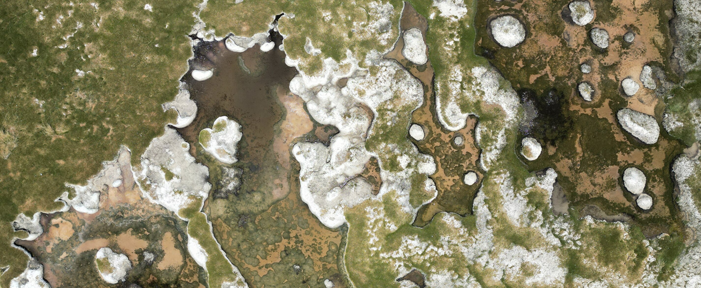
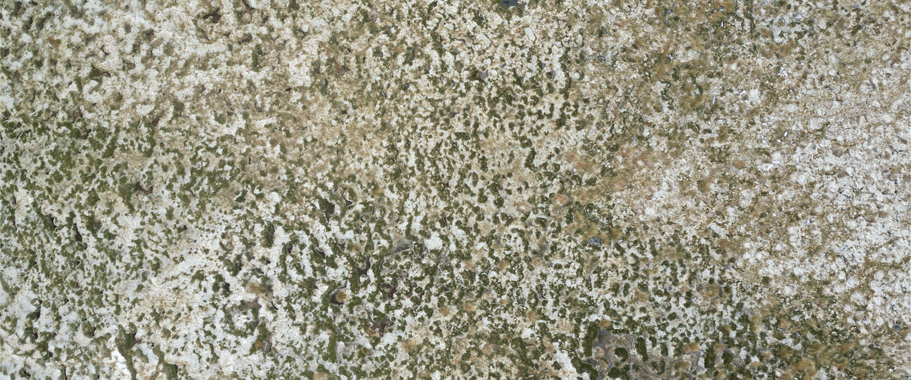
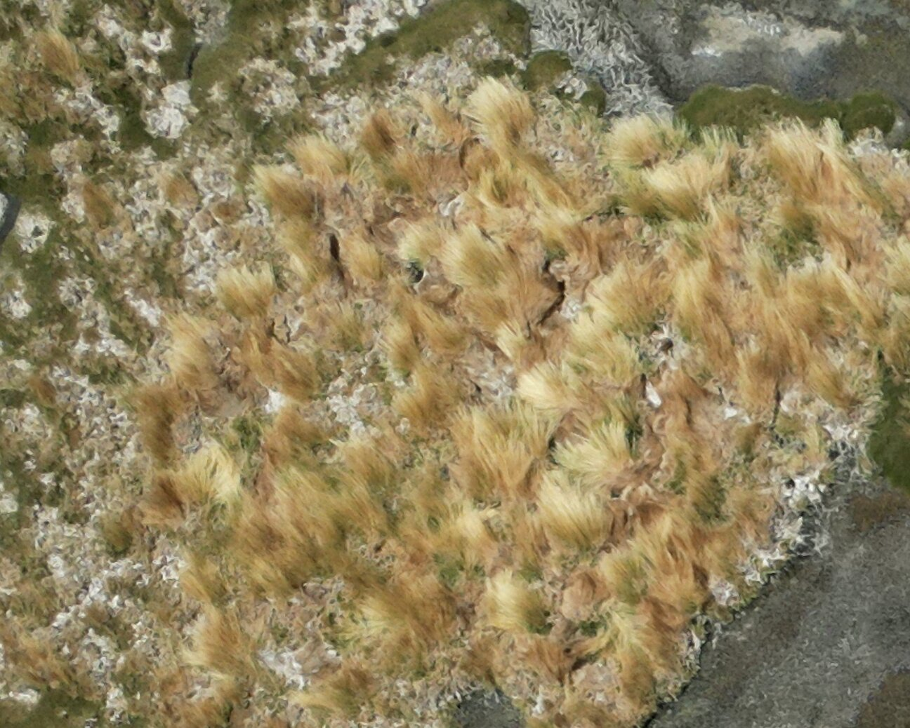

Ecología y Socio-Ecología
La línea de Ecología y Socio-Ecología del proyecto OASIS busca comprender las dinámicas ecológicas y sociales que configuran los paisajes altoandinos de la Región de Atacama. A través del estudio de la flora, la vegetación y las interacciones entre agua, suelo y microorganismos, esta línea examina cómo los ecosistemas de lagunas y salares responden a los cambios ambientales y a las presiones derivadas de la actividad humana, especialmente la minería y el turismo.
El enfoque socio-ecológico vincula directamente la acción humana con los procesos ecológicos del territorio: analiza cómo las decisiones de uso del suelo, la extracción de recursos hídricos y el flujo turístico afectan la estructura y función de los ecosistemas altoandinos. Con foco en la gobernanza colaborativa del territorio frente a los desafíos de la minería del litio y el turismo de alta montaña, esta línea promueve un modelo de monitoreo participativo donde comunidades locales, guardaparques, investigadores y otros actores colaboran en la observación y seguimiento de los ecosistemas. Este modelo genera indicadores simples, comparables y sostenibles en el tiempo para la gestión ambiental compartida.
Integrando datos de campo, sensores remotos y plataformas abiertas, esta línea de investigación contribuye a desarrollar una visión integral de los socio-ecosistemas altoandinos, fortaleciendo la capacidad local de adaptación y conservación.
En paralelo, se estudia el corredor biológico que conecta el Salar de Maricunga con la Laguna del Negro Francisco, identificando especies clave e interacciones ecológicas que sostienen la conectividad funcional del paisaje altoandino.
Mapa NDVI de zonas de estudio
El NDVI (Normalized Difference Vegetation Index) es un índice espectral que mide la cantidad y el vigor de la vegetación a partir de imágenes satelitales. Se calcula comparando la radiación reflejada en las bandas del infrarrojo cercano (NIR) y del rojo visible, lo que permite identificar áreas con mayor o menor actividad fotosintética.
En el contexto del Observatorio OASIS, este indicador es clave para monitorear los ecosistemas altoandinos, donde los cambios en la vegetación reflejan variaciones en la disponibilidad de agua, el estrés ambiental y la presión sobre humedales y vegas.
El análisis temporal del NDVI permite detectar tendencias de degradación o recuperación, evaluar los efectos de la sequía y comprender cómo las comunidades vegetales responden a las fluctuaciones del clima y las actividades humanas.
El NDVI, que refleja la actividad fotosintética y, por ende, la productividad primaria de cada píxel, puede funcionar como un indicador de alerta temprana sobre la condición de la vegetación. De esta forma, se integran observaciones satelitales validadas con datos de terreno como herramientas de apoyo a la gestión socioambiental de la cuenca de Maricunga.
Sector Laguna Santa Rosa – Espejos de agua y afluentes tributarios
Fuente: Elaboración CONAF, 2020
Ubicación de los espejos de agua del sector Laguna Santa Rosa, PNNTC.
| Nombre Laguna | Área (ha) | Perímetro (km) | Afluentes tributarios |
|---|---|---|---|
| Laguna Este (1) | 4,46 | 1,2 | Quebrada Pastillo, quebrada La Coipa, quebrada La Coipa lateral, cuyas aguas provienen de laderas volcánicas destacando el volcán Copayapu (Corredor Biogeográfico). |
| Laguna Mirador (2) | 15 | 2,8 | Quebradas Pastillo, quebrada La Coipa y quebrada La Coipa lateral, cuyas aguas provienen de laderas volcánicas, destacando el volcán Copayapu. |
| Laguna Sur (3) | 4,24 | 1,2 | Volcán Pastillo, posible infiltración desde Laguna Mirador. |
| Laguna Santa Rosa (4) | 39,97 | 3,1 | Volcán Ojos de Maricunga, volcán Santa Rosa, volcán Pastillito, Laguna Mirador. |
| Laguna Norte (5) | 6,78 | 2,1 | Volcán Ojos de Maricunga y posible conexión subterránea con Laguna Este. |
Ecosistemas identificados en terreno — Sector SVATH
El trabajo de campo en el Sistema de Vegas y Aguas Transicionales del Altiplano Hídrico (SVATH) ha permitido identificar y caracterizar tres tipos de ecosistemas higrófilos en las cuencas de estudio, cada uno con flora distintiva y roles funcionales diferenciados en la regulación hídrica y el almacenamiento de carbono.

Bofedales
Juncáceas de crecimiento en cojín: compactas, con alta capacidad de almacenar agua.
Oxychloe andina · Distichia muscoides · Zameioscirpus atacamensis

Vegas
Juncáceas de crecimiento rizomatoso erguido y suculentas, en zonas de flujo hídrico constante.
Triglochin concinna

Pajonales Hídricos
Poáceas adaptadas a alta humedad edáfica, en bordes de humedales y zonas de transición.
Cinnagrostis velutina · Puccinellia frígida
Transecto Laguna Mirador
Herbario Digital OASIS

El Herbario Digital OASIS es una plataforma abierta que reúne las especies vegetales documentadas en los salares y lagunas altoandinas de la zona del Salar de Maricunga. Cada registro incluye fotografías de campo, identificación taxonómica y observaciones morfológicas realizadas por especialistas, consolidando un archivo visual y descriptivo de la flora altoandina.
Su propósito es facilitar el estudio comparativo de especies y comunidades vegetales, apoyar la educación ambiental y poner a disposición del público un repositorio colaborativo de conocimiento ecológico. Este herbario es una herramienta viva que crecerá con cada campaña de terreno, contribuyendo al monitoreo y la comprensión de la biodiversidad en los ecosistemas de altura.